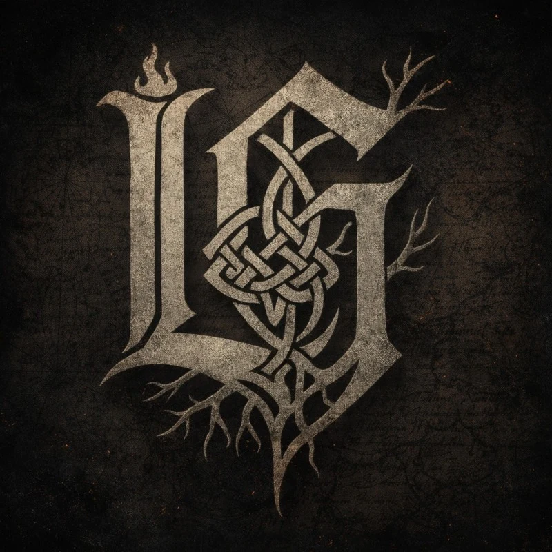

Lanterns to the Line
Released March 2, 2026 · Lazarus Grimm
Lanterns to the Line is a translation. Every song on this record — except the closing track — begins in the same place as ShadowWork: my shadow work journal, the raw pages where I did the hardest interior work of my life. But where ShadowWork carried that material in lo-fi trip-hop and intimate acoustic textures, Lanterns to the Line brings it into the full Lazarus Grimm sound — heavy, dynamic, and built to hit.
This is not a reimagining for its own sake. The journal said what it said. The wounds were what they were. But some of that truth needed to be screamed, not whispered. Some of it needed a breakdown, not a beat. Lanterns to the Line is what happens when the shadow work meets the fire.
The themes are the ones I have carried my whole life and spent years learning to set down. A marriage where I confused control with protection and silence with strength. A mother who made a choice that cost me everything and whom I have never fully been able to reach. The lie pornography taught me at nine years old and the decades of unlearning that followed. The generational current of addiction I traced all the way back to my third great-grandfather Cornelius — a Civil War veteran who survived the battlefield and reached for a bottle to survive the peace — and the moment I chose to end the transmission. And through all of it, the slow, hard discovery that I am enough right now, exactly as I am, to do exactly what I have been called to do.
The album closes with Circle of Breath — a song written not from the journal but from the other side of it. A communal liturgy for anyone who has found their people, done the work, and is ready to step into the circle and breathe.
Lanterns to the Line is for the man who needs the same truths as ShadowWork but needs them louder. It is for anyone who has done the interior work and is ready to bring it into the open. And it is for everyone who has carried a wound through their bloodline long enough — and is choosing, today, to set it down.
Lanterns to the Line is the full Lazarus Grimm sonic identity applied to the most personal material I have ever written. Drawing from the dark groove-metal weight of Korn, the worship-metal ferocity of Sleeping Giant, the theological intensity of Oh Sleeper, and the genre-defying dynamic range of Falling in Reverse, this album moves between genuine vulnerability and genuine heaviness — and means both. The quiet moments are earned. The breakdowns hit harder because of what came before them. This is the sound of shadow work done out loud.
- Shades of Gray The album opens with disconnection — a man in a marriage who is present in body and absent everywhere else, a child still hiding inside an adult performance. Written from my own experience and for every man who has looked at the person next to him and realized he has no idea how to truly be there. It ends not with rescue but with the radical act of offering my own hand.
- Unlearning the Lie The heavier translation of The Lie I Learned. Written for every man whose understanding of women was shaped by pornography before anyone taught him what love actually looks like. This is the ongoing work of seeing clearly — not a confession of failure but a commitment to something better.
- What if Strength Is A question I had to ask myself. I built my identity on being the one who never needed anything, never cracked, never asked for help. This song is the moment I started to understand that the bravest thing I could do was let my wife see me fall apart.
- Without Disappearing A long, multi-movement address to my mother. She made a choice. I stayed gone. We both carried silence. This song doesn’t resolve that — it refuses to disappear from it. Which is the only honest place I know how to stand.
- Claiming My Breath About stepping into spiritual leadership with the fear still present. Not waiting until the doubt is gone. Moving anyway, because the call is louder than the hesitation, and because I own my path — past, present, and future.
- Safe Inside of Me Written to my childhood self and for every inner child still hiding in the dark. The work of integration — not suppressing the boy who survived, but making room for him, putting armor on gently, and telling him it’s safe to come out.
- Enough Right Now A groove-forward declaration pulled from the journal. I don’t need to be finished to be enough. I don’t need to be ready to move. I just need to move.
- Free to Seek Truth My faith reclaimed from every system that tried to weaponize it. Found again in dirt and trees and honest questions. This is what my Christian Druid faith sounds like when it has nowhere left to hide.
- Today I Stay About choosing presence over escape — one breath, one action, one day. For anyone who learned early that disappearing was survival and is now learning, slowly and with effort, that it no longer has to be.
- Lanterns for the Line The album’s centerpiece and namesake. I carry the generational current of addiction back through the bloodline to Cornelius — my third great-grandfather, a Civil War veteran who reached for a bottle to survive the peace, and whose reach echoed forward through every generation until it reached me. I trace it. I name it. I write it down. And I choose to end it — not just for myself but for everyone who comes after me.
- Breathed Me Awake A worship song rooted in the Hebrew understanding of Yahweh as breath itself. Grateful, still, and alive. A moment of rest inside the heaviest record I have made.
- One Breath Aligned For the person whose relationship with time and energy has been defined by cycles of overwork and collapse. About building a rhythm instead of chasing a rush. One breath. One step. One day.
- Boundaries Like Rain About the specific love that holds a line — loving my brother without being consumed by his chaos, protecting my home without abandoning my heart. I own the choice to draw that line. I also own the love that draws it.
- Circle of Breath The only song on this album that did not come from the shadow work journal. A communal liturgy written for anyone who has found their people — an invocation of every name of God, a releasing of every weight carried too long, and a sending forth into whatever comes next. The circle opens. The bond does not break. Go gently.